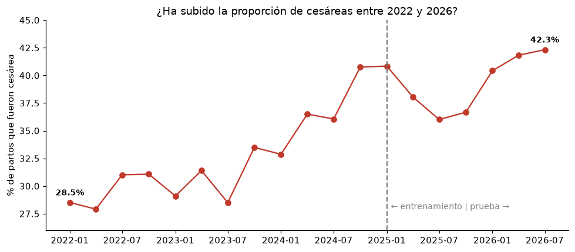
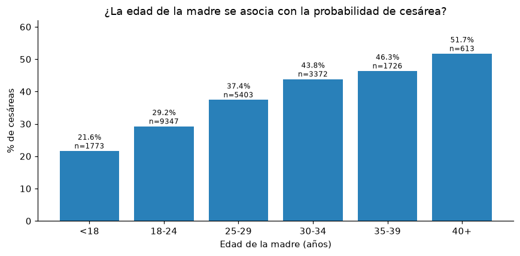
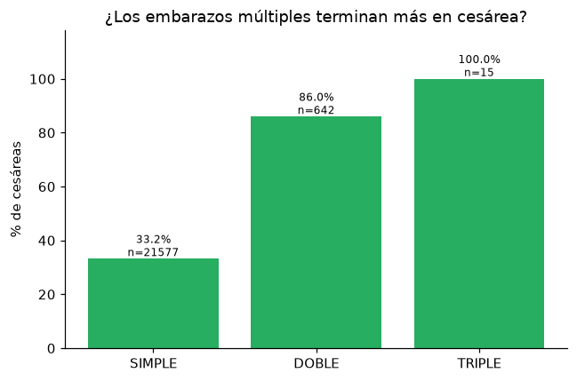
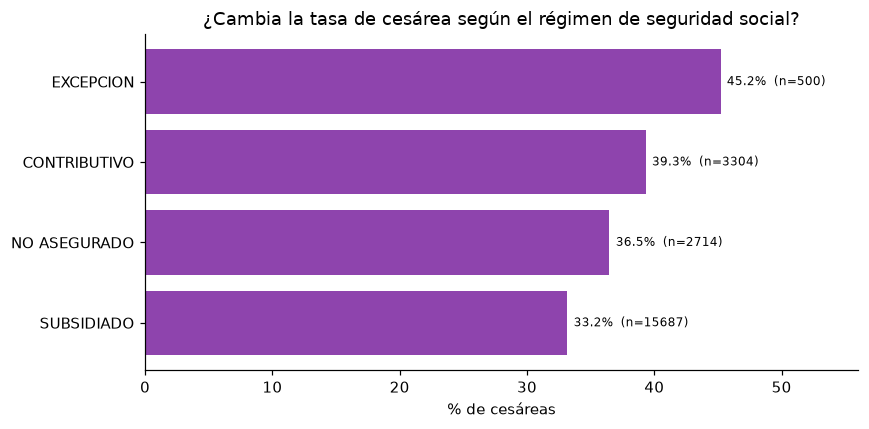
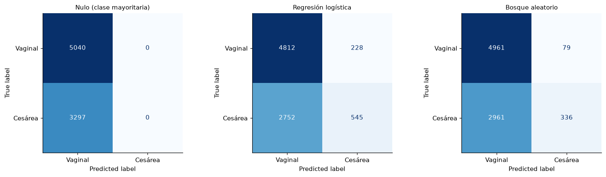
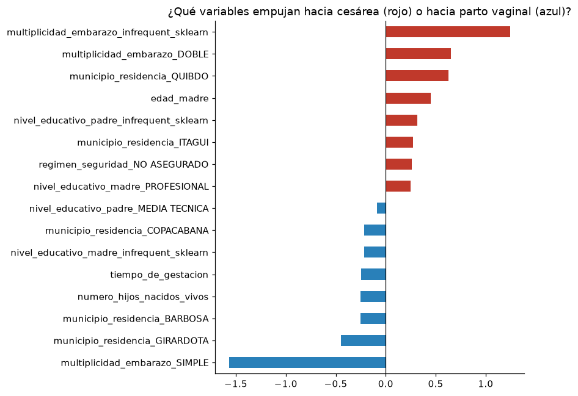

¿Se puede anticipar
si un parto termina en cesárea?
Reparación de los datos, gráficos y modelo de predicción del notebook de la Tarea 2.
Fuente: datos.gov.co (conjunto kjs7-2ryw) 22 234 filas · 32 columnas Enero 2022 – septiembre 2026 Un registro = un nacimiento
Flechas ← → para cambiar de diapositiva.
Reparación 1 · ¿Cómo entró el archivo?
URL = "https://www.datos.gov.co/resource/kjs7-2ryw.csv?$limit=50000"
crudo = pd.read_csv(
URL,
sep=",",
encoding="utf-8",
na_values=["", "NA", "N/A"],
)
Se lee directo de la API pública, sin rutas locales. El límite se sube a 50 000 para traer todas las filas.
filas y columnas después de leer.
Qué se trató como faltante
- Al leer: vacío,
NAyN/A. - En la limpieza: el texto
SIN INFORMACION(con o sin tilde). Son 287 celdas: 127 en nivel educativo del padre, 83 en estado conyugal y 77 en nivel educativo de la madre.
Reparación 2 · ¿Qué se parseó y qué huecos nacieron?
Fecha
fecha_nacimiento, de texto ISO a fecha con errors="coerce".
huecos nuevos. Rango: 2022-01-01 a 2026-09-30.
Números
13 columnas con pd.to_numeric(errors="coerce"): peso, talla, gestación, edades, consultas, Apgar, embarazos, hijos y otras.
huecos nuevos por el parseo.
Categorías
Aquí estaba la suciedad: tildes distintas y redacción que cambió entre periodos.
287huecos que nacen al limpiar texto: eran SIN INFORMACION.
| Columna | Problema | Categorías antes | Después |
|---|---|---|---|
tipo_parto | CESAREA y CESÁREA contaban como dos | 5 | 3 |
estado_conyugal_madre | tildes y «ESTA SOLTERA» frente a «ESTABA SOLTERO(A)» | 17 | 6 |
nivel_educativo_madre | con y sin tilde | 23 | 14 |
municipio_residencia | con y sin tilde | 295 | 229 |
Regla general: quitar tildes, pasar a mayúsculas y colapsar espacios en todas las columnas de texto. El estado conyugal además se mapea a categorías comparables.
Reparación 3 · ¿Qué se auditó?
Faltantes (después de limpiar)
| Columna | n | % |
|---|---|---|
| localidad | 5 683 | 25,6 |
| nombre_administradora | 2 743 | 12,3 |
| nivel_educativo_padre | 2 611 | 11,7 |
| edad_padre | 819 | 3,7 |
| ultimo_ano_aprobado_madre | 411 | 1,8 |
| estado_conyugal_madre | 277 | 1,2 |
| nivel_educativo_madre | 274 | 1,2 |
| factor_rh / grupo_sanguineo | 133 / 126 | 0,6 |
| apgar1 y apgar2 | 47 | 0,2 |
| gestación | 9 | <0,1 |
| área, municipio, departamento | 5 | <0,1 |
Duplicados
0duplicados exactos. No hay identificador del nacimiento, así que no se borran filas por «parecerse».
Un hueco estructural
localidad falta en 5,3 % de los residentes de Medellín y en 51,2 % de quienes viven fuera.
Imposibles y sospechosos
- 3 edades de padre > 80 (94, 99 y 100): pasan a faltante.
- 133 casos (0,6 %) de embarazo simple con más hijos vivos que embarazos: se marcan, no se borran.
- 191 madres de 12 a 14 años: se dejan, son casos reales.
- 115 partos antes de 28 semanas y 142 pesos menores de 1000 g: se dejan.
Reparación 4 · ¿Qué se decidió, variable por variable?
| Variable | Decisión | Por qué |
|---|---|---|
localidad | Dejar el hueco; no entra al modelo | Hueco estructural: imputar inventaría localidades |
nombre_administradora | Dejar el hueco; no entra | regimen_seguridad ya cubre la idea |
nivel_educativo_padre | Imputar con la moda (en el Pipeline) | Variable útil con 11,7 % de huecos; deforma la distribución (diapositiva siguiente) |
edad_padre | Valores > 80 a faltante; imputar con la mediana | Pocos huecos; la mediana resiste extremos |
ultimo_ano_aprobado_madre | Imputar con la mediana | 1,8 % de huecos |
estado_conyugal_madre, nivel_educativo_madre | Imputar con la moda | 1,2 % de huecos; columnas útiles |
tiempo_de_gestacion | Imputar con la mediana | Solo 9 filas |
area_residencia, municipio_residencia | Imputar con la moda | Solo 5 filas cada una |
departamento_residencia, factor_rh, grupo_sanguineo | Dejar el hueco; no entran | Redundantes o sin relación esperada con el problema |
apgar1, apgar2 | Dejar el hueco; no entran | Se miden después del parto |
| Filas | No se elimina ninguna | Los atípicos son parte del fenómeno |
La mediana y la moda se calculan solo con el entrenamiento (2022–2024), dentro del Pipeline, para que la prueba no se filtre.
Reparación 5 · ¿Qué le hizo la imputación a la distribución?
Numéricas: mediana del entrenamiento
| Variable | Imputados | Valor | Media antes → después | Desv. antes → después | Cambio desv. |
|---|---|---|---|---|---|
edad_padre | 819 | 28 | 29,59 → 29,53 | 7,82 → 7,68 | −1,8 % |
ultimo_ano_aprobado_madre | 411 | 9 | 7,70 → 7,73 | 3,19 → 3,17 | −0,8 % |
tiempo_de_gestacion | 9 | 38 | 37,79 → 37,79 | 2,18 → 2,18 | ≈ 0 % |
Categóricas: moda del entrenamiento
| Variable | Imputados | Moda | % de la moda antes → después |
|---|---|---|---|
nivel_educativo_padre | 2 611 | Media académica o clásica | 35,5 → 43,1 |
nivel_educativo_madre | 274 | Media académica o clásica | 36,6 → 37,4 |
estado_conyugal_madre | 277 | Unión libre ≥ 2 años | 48,3 → 48,9 |
area_residencia | 5 | Cabecera municipal | 80,4 → 80,4 |
municipio_residencia | 5 | Medellín | 55,9 → 55,9 |
La que sí deforma: rellenar con la moda el nivel educativo del padre infla esa categoría en 7,6 puntos. Cualquier lectura sobre esa variable debe tenerlo en cuenta. En las demás el efecto es pequeño.
¿Ha subido la proporción de cesáreas entre 2022 y 2026?

Lectura
28,5 % → 42,3 %del primer trimestre de 2022 al tercero de 2026. La subida no es pareja: hay bajadas, como en 2025.
Qué no se puede concluir
No se sabe si cambió la práctica médica, el tipo de pacientes o la forma de registrar. Es un solo hospital y 2026 llega solo a septiembre.
¿La edad de la madre se asocia con la probabilidad de cesárea?

Lectura
21,6 % → 51,7 %de menores de 18 años a 40 o más. La tasa sube en cada grupo de edad.
Qué no se puede concluir
Que la edad cause la cesárea. A mayor edad cambian también los antecedentes y riesgos clínicos, que no están en la base.
¿Los embarazos múltiples terminan más en cesárea?

Lectura
33,2 % frente a 86,0 %simples frente a dobles. En triples fue el 100 %.
Qué no se puede concluir
Los triples son solo 15 casos: ese 100 % no es una regla. Los múltiples son pocos (657 de 22 234), así que explican una parte pequeña del total.
¿Cambia la tasa de cesárea según el régimen de seguridad social?

Lectura
33,2 % a 45,2 %subsidiado frente a régimen de excepción. Solo se muestran grupos con 100 casos o más.
Qué no se puede concluir
Que el régimen cause la cesárea. Los grupos son muy desiguales (500 frente a 15 687) y pueden diferir en edad, riesgo o motivo de remisión.
Modelo · ¿Qué es y, y qué entra en X?
y: si el parto terminó en cesárea (1) o fue vaginal, espontáneo o instrumentado (0), tomado de tipo_parto.
X: lo que entra
Numéricas: edad de la madre y del padre, semanas de gestación, consultas prenatales, número de embarazos, hijos nacidos vivos y último año aprobado por la madre.
Categóricas: multiplicidad, estado conyugal, nivel educativo de madre y padre, régimen de seguridad, área y municipio de residencia.
Lo que quedó fuera
| peso, talla, Apgar 1 y 2 | no existen al momento de predecir |
| quién atendió el parto, certificador | describen el acto del parto |
tipo_parto | es la respuesta |
| año, periodo, fecha | con split temporal obligarían a extrapolar |
| localidad, administradora, sangre, etnia, país, departamento | huecos estructurales, redundancia o casi constantes |
Advertencia: las semanas de gestación se registran al nacer. Una cesárea programada suele adelantar el parto, así que esa variable no es del todo independiente de la decisión.
Modelo · ¿Cómo se separó y cuál es el baseline?
| Conjunto | Periodo | Partos | Cesárea |
|---|---|---|---|
| Entrenamiento | 2022 – 2024 | 13 897 | 31,9 % |
| Prueba | 2025 – sep. 2026 | 8 337 | 39,5 % |
Split temporal: se aprende del pasado y se prueba en el futuro. Un split aleatorio dejaría ver el mismo año a ambos lados.
Imputación, escalado y one-hot viven en un Pipeline. Los municipios con menos de 100 casos se agrupan como infrecuentes.
Baseline: clase mayoritaria del entrenamiento
Predice siempre parto vaginal.
0,605de exactitud en la prueba.
0,00de recall y F1 de cesárea: no detecta ninguna de las 3 297.
Modelo · ¿Le gana al baseline en la prueba?
| Modelo | Exactitud | Precisión cesárea | Recall cesárea | F1 cesárea | AUC |
|---|---|---|---|---|---|
| Baseline (siempre vaginal) | 0,605 | 0,000 | 0,000 | 0,000 | 0,500 |
| Regresión logística | 0,643 | 0,705 | 0,165 | 0,268 | 0,654 |
| Bosque aleatorio | 0,635 | 0,810 | 0,102 | 0,181 | 0,657 |

Sí gana, pero por poco. La logística detecta 545 de 3 297 cesáreas, con 228 falsas alarmas. El bosque no la mejora en F1.
¿Qué variables empujan hacia cesárea o hacia parto vaginal?

Lectura
El coeficiente más fuerte es embarazo simple (−1,57, hacia vaginal). Hacia cesárea pesan los múltiples (los triples, agrupados como infrecuentes, 1,25; dobles 0,65) y la edad de la madre (0,45).
El umbral cambia la lectura
| Umbral | Precisión | Recall | F1 |
|---|---|---|---|
| 0,3 | 0,500 | 0,639 | 0,561 |
| 0,4 | 0,616 | 0,341 | 0,439 |
| 0,5 | 0,705 | 0,165 | 0,268 |
| 0,6 | 0,846 | 0,095 | 0,170 |
Un coeficiente no es una causa. El de Quibdó (0,63) se apoya en un grupo pequeño de pacientes.
¿Qué se puede concluir y qué no?
Sí se puede decir
- El modelo supera al baseline: exactitud 0,643 frente a 0,605 y AUC 0,65 frente a 0,50.
- Embarazo múltiple y mayor edad materna se asocian con más cesáreas.
- La proporción de cesáreas subió en el periodo, y por eso el modelo entrenado con 31,9 % se queda corto cuando la prueba tiene 39,5 %.
No se puede concluir
- Que sirva para decidir o auditar un parto: faltan las indicaciones clínicas (cesárea previa, presentación fetal, sufrimiento fetal, preeclampsia).
- Que valga para Antioquia o Colombia: es un solo hospital, de referencia.
- Que el régimen o el municipio causen cesáreas.
- Que 2026 marque una tendencia anual: está incompleto.